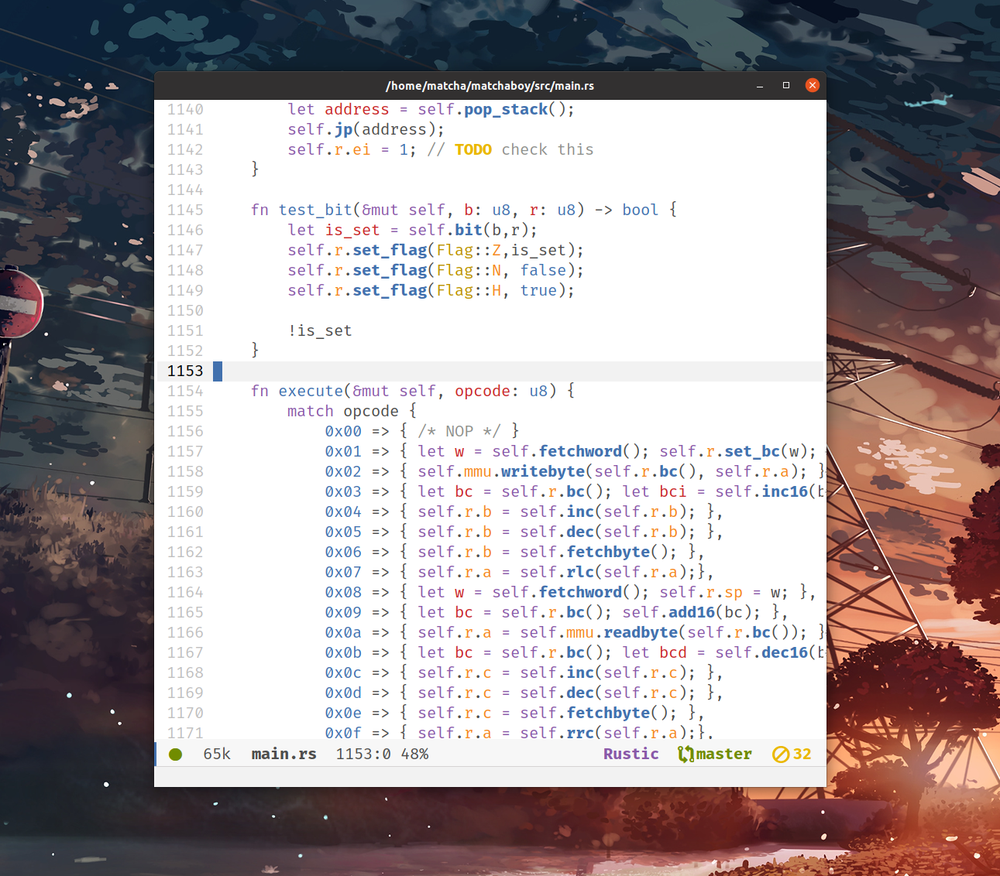

Premier affichage pour mon émulateur de Gameboy !
Enfin !!! J’ai fini l’implémentation du CPU et une partie du GPU !
L’image du logo dans cet article représente l’apparition du logo Nintendo émulé par mon émulateur, mon propre code, c’est beau 🥲.
Au passage, je me suis amusé, j’ai un peu changé les couleurs, dans le but de faire quelques tests sur le rendu graphique.
Alors, pour émuler entièrement un jeu, il y a encore beaucoup de travail à faire. Peut-être un jour… L’émulateur sera capable de supporter des petits jeux comme Tetris, qui sait ? 🤔
Objectif accompli
En tous cas j’ai rempli l’objectif du projet qui était d’avoir l’affichage du logo fonctionnel, je suis déjà très content d’avoir réussi ! Pour le reste, c’est que du bonus.
J’ai appris énormément grâce à ce projet et j’ai notamment une vision plus claire de comment fonctionne un CPU, la RAM ou encore un bios. Notamment la connexion entre chaque composant est super intéressante à concevoir 😊.
La prochaine étape serait d’améliorer l’affichage car tout n’est pas implémenté, et peut-être afficher un premier écran de jeu !
Cependant, il y a encore du chemin à faire avant d’afficher un écran de jeu.
Il faudra d’abord que j’implémente un parser du Header de la cartouche qui contient les informations importantes sur le jeu et sa mémoire.
Premier retour d’expérience de Rust, sur un side project
Enfin, on termine avec un retour d’expérience sur l’utilisation de Rust pour ce projet.
{kind=link}
Pour faire simple: je réfléchis tout simplement à abandonner Rust et partir sur autre chose comme du C/C++ ou en profiter pour essayer le Zig par exemple. Étant plus habitué au C/C++, mon expérience de Rust a quand même été très frustrante. On passe de langages où le développeur est maitre de ce qu’il fait à un langage où, cette fois-ci, c’est le langage qui est maitre. C’est une expérience intéressante mais pas toujours facile à vivre.
Alors, certes Rust apporte des choses intéressantes: une syntaxe un peu plus agréable que le C++ par exemple mais tout aussi puissante, Un gestionnaire de dépendances, une communauté sympa très dynamique et motivée ! Le tout, sans compter le caractère safe du langage qui est clairement un de ses plus gros intérêts.
Mais, pour un side project, dans lequel le but premier n’est pas d’apprendre Rust, je dirais que c’est difficile de rester motivé à apprendre un langage qui te met beaucoup de de batons dans les roues ( pour la bonne cause, c’est sûr, mais est-ce que mon émulateur a vraiment besoin d’être safe ?).
J’ai le sentiment d’avoir passé beaucooup plus de temps à me battre avec le langage qu’à réellement coder l’émulateur.
En tous cas je suis quand même content d’avoir sauté le pas pour essayer Rust🦀 !
Je ne sais pas quand aura lieu la prochaine update sur ce projet mais en tous cas j’ai hâte de savoir si le moi du futur aura persévéré dans l’utilisation de Rust 😂.